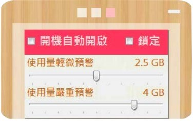
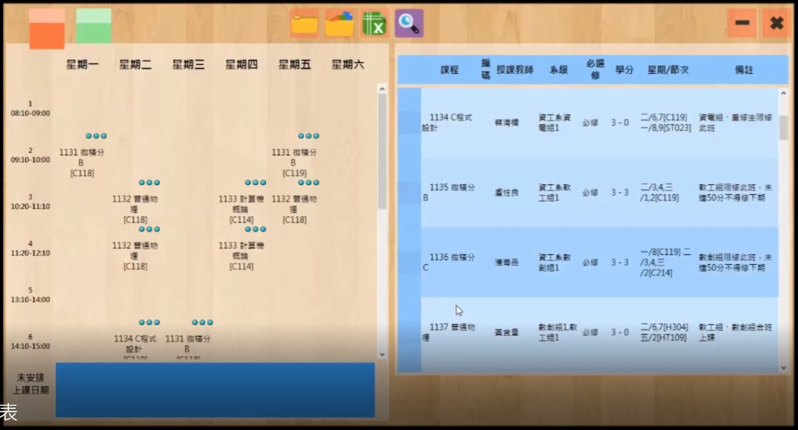
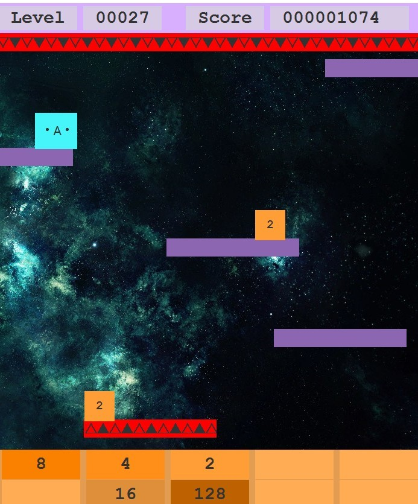
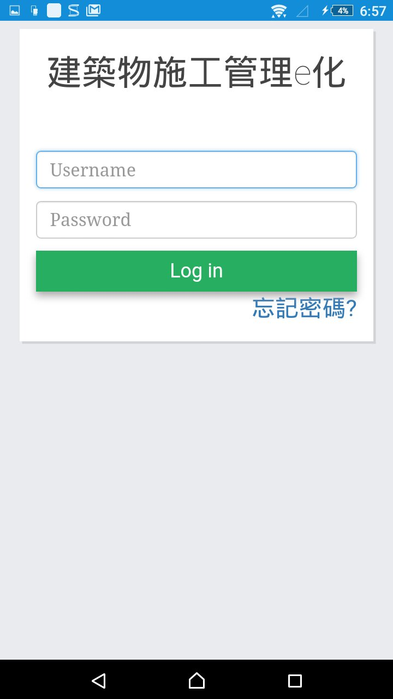
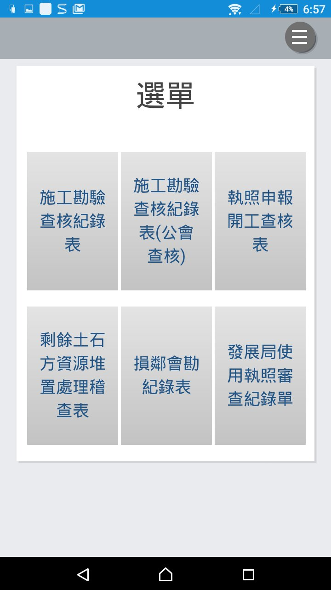
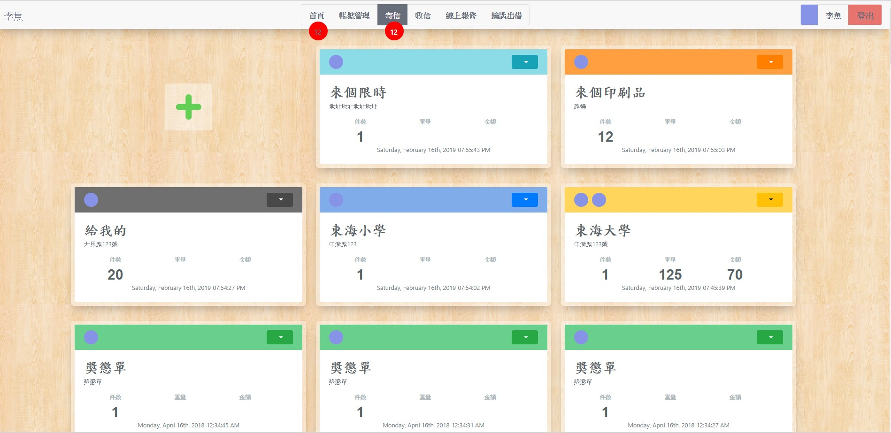
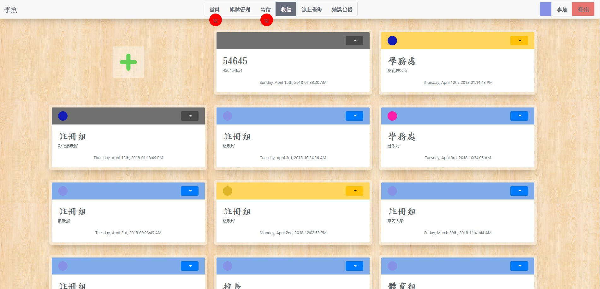
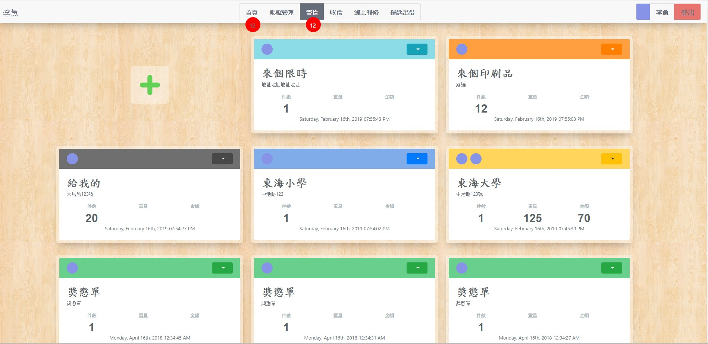
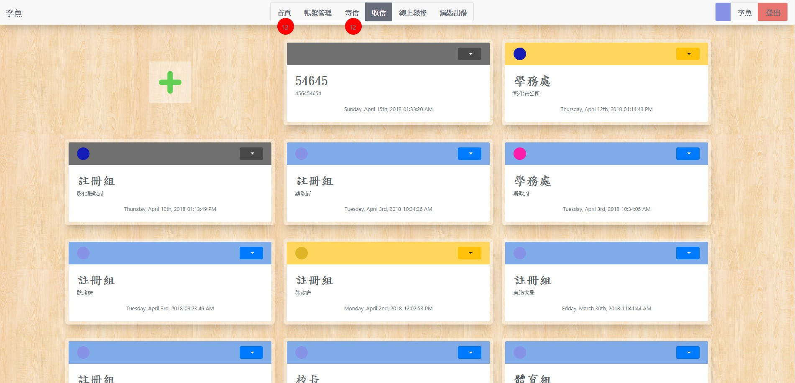
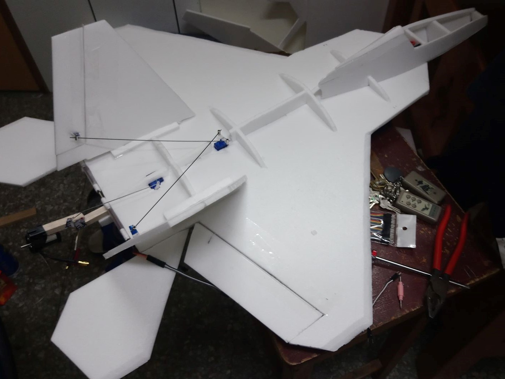

李耕瑜
LEE,KEN-YU
東海大學 資訊工程研究所
聯絡我
(+886)937-900-129
Changhua, Taiwan
s2013453@gmail.com
從高中開始自學程式設計，對於有趣的事物可以廢寢忘食，在學期間多次製作出跟校務有關的程式，研究所階段也接觸了雲端計算和人工智慧，服役期間也幫單位製作了一些小工具，退伍後在研究自製大型遙控飛機，所學甚廣但不精，目前在成為軟體開發工程師的道路上努力，如果你對我有興趣，歡迎跟我聯絡。
學歷
- 東海大學 資訊工程研究所Sep 2015 - Sep 2017
- 東海大學 資訊工程系-資電組Sep 2011 - Jun 2015
經歷
- 元緒科技股份有限公司 產學合作Aug 2016 - Sep 2017
- 科技部專題計畫(MOST-104-2221-E-029-009) 專案負責Sep 2015 - Sep 2017
- 高等演算法助教Sep 2015 - Jun 2016
- 科技部專題計畫(MOST-104-2218-E-006-016) 參與製作Oct 2015 - Dec 2015
- 實驗室助理Sep 2014 - Jun 2015
專業領域
- JAVA
- C#/VB .NET
- JavaScript/jQuery
- MySQL/SQLite
- NodeJS
- python
- HTML/CSS
- arduino
- C/C++
獲獎


作品
座位編排系統
能讓兩班學生合併在一班的座位表中，能客製化教室參數，能選擇入座方式，能兼容excel和txt格式的存讀檔，能列印出PDF。


made in 2011~2013
宿舍網路流量監控
礙於本校宿舍有限流量而製作，一鍵安裝，常駐於工作列，具有網路流量統計，可預估剩餘流量能使用的時間，並且有可自訂的網路使用量預警，和人人都能看懂的極簡化程式介面。
made in 2013
課表編排程式
可以在本程式中進行假選課，程式會列出學校全部課表，衝堂和學分累計也都有提示，能存讀檔供好友交換，最後產生出整齊的功課表。
made in 2013~2014
下樓2048
just for fun
made in 2013
產學合作案 建築施工管理e化
(待補)
 
made in 2016~2017
總務處行政業務電子化
(待補)
 



made in 2018
自製遙控飛機
(待補)
made in 2018